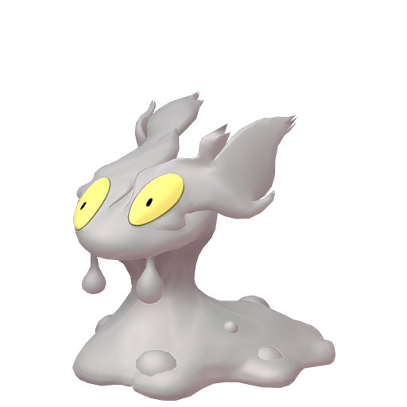
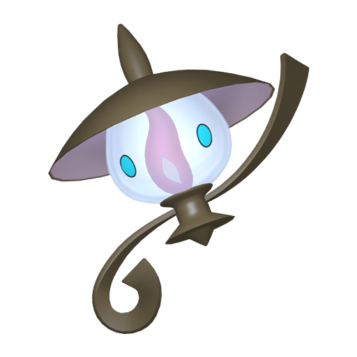
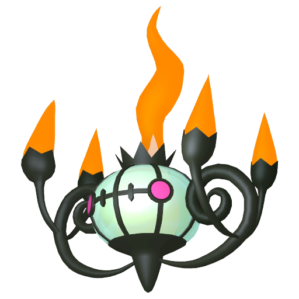
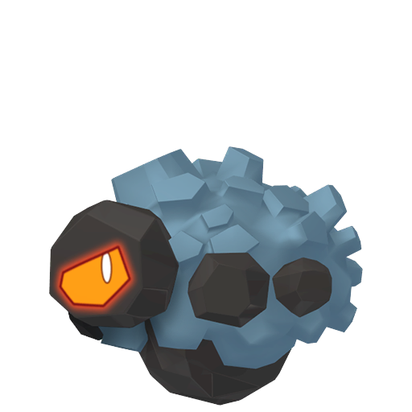
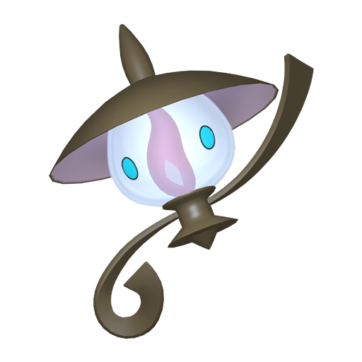
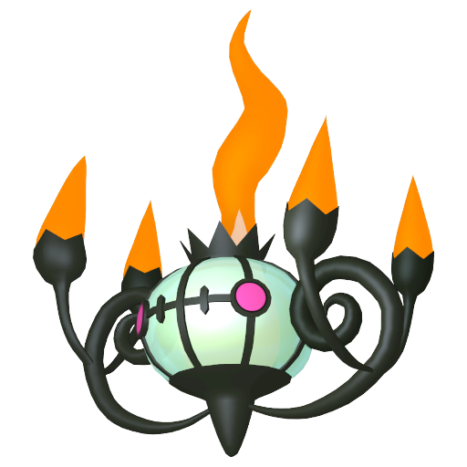
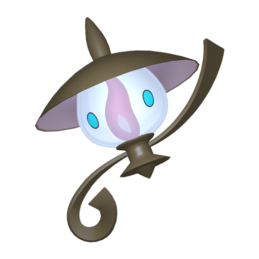
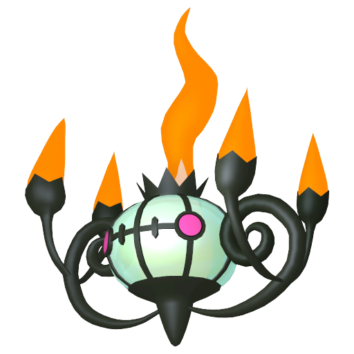

Qu'est-ce que la méthode Masuda en Shiny Hunting ?
La méthode Masuda, disponible depuis les jeux de la 4ème génération, Diamant, Perle et Platine,
est une méthode de Shiny Hunting qui consiste à se faire reproduire 2
Pokémon de nationalité différente pour tenter d’obtenir un œuf contenant un Pokémon Shiny.
Pour effectuer cette méthode il y a plusieurs pré-requis, il va d’abord falloir vous procurer 2
Pokémon.
Le premier sera celui que vous souhaitez obtenir en shiny, si il n’est pas disponible dans le jeu,
il peut aussi s’agir de l’évolution du Pokémon.
Exemple : Si vous souhaitez avoir un Salamèche shiny mais qu’il n’est pas disponible dans
votre jeu, vous pouvez alors prendre un Reptincel ou un Dracaufeu s' ils sont disponibles.
Le 2ème Pokémon devra être celui avec lequel votre 1er Pokémon va se reproduire,
il peut s’agir d’un pokémon dans le même groupe d’oeufs mais de façon général,
un Métamorph reste la meilleure solution puisqu’il peut s’accoupler avec n’importe quel Pokémon
(sauf Pokémon asexués).
Peu importe votre choix, votre Pokémon devra impérativement être d’une nationalité différente de
celle du 1er Pokémon.
Facultatif
Il existe des astuces qui peuvent vous permettre de vous aider lors de votre shasse.
La première consiste à posséder le Charme Oval
, celui-ci vous permettra d’obtenir des œufs plus facilement.
La deuxième consiste à posséder un Pokémon avec le talent Armumagma, Corp Ardent ou Turbine,
cela vous permettra de diviser le nombre de pas à faire pour faire éclore vos œufs par 2.
Talent
Pokemon
Armumagma

Corps Ardent

Turbine (Uniquement sur EB)

*EB = Epée et Bouclier
Enfin la troisième astuce concerne Pokémon S/L et USUL consiste à utiliser des Moti-Couveuse
qui vous permettront de faire éclore vos œufs beaucoup plus rapidement.
Cette Motism’Aura peut s’obtenir dans le Motismagogo qui peut être lancé lorsque vous
cliquez sur votre Motisma Dex si il a les yeux à moitié fermé et semble triste.
Cette dernière astuce peut également se faire avec les O-Aura Eclosion sur Pokémon XY et les
Offri-Aura sur Pokémon Noir et Blanc.
Cas particuliers
Certains Pokémon doivent posséder un certain objet pour faire éclore le Pokémon recherché,
en voici la liste avec les objets associés et leur localisation dans ce tableau ci-dessous.
Déroulement de la shasse :
Pour tous les jeux SAUF Pokémon Écarlate et Violet
1 - Commencez par vous rendre à la Pension Pokémon de votre jeu
Nouilles
Poivron Rouge
Bacon
Poivron Jaune
Piment
Œuf
Huile d'Olive
Sel
Curry en Poudre
Épice Secrète
Aura Insigne Roche (Niv. 2)
Aura Œuf (Niv. 2)
Aura Rencontre Normal (Niv. 2)
3 - Une fois votre sandwich réalisé (vérifiez bien que le bonus est appliqué)
vous allez devoir pendant 30 minutes récupérer vos oeufs régulièrement en parlant au panier
(le panier ne peut pas stocker plus de 10 oeufs).
4 - Placez maintenant votre Pokémon avec le talent Armumagma, Corp Ardent ou Turbine en
tête d’équipe.
5 - Enfin, il ne vous restera plus qu’à faire éclore tous les œufs que votre Pokémon aura
fraîchement pondu.


 
